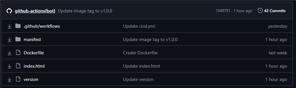
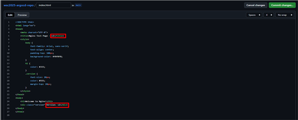
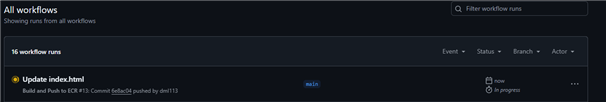
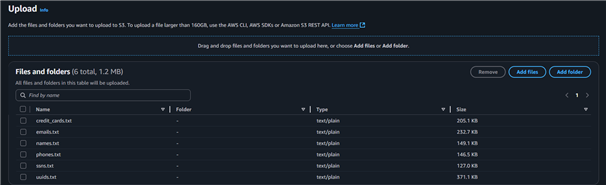
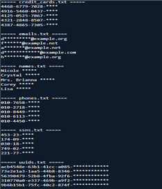
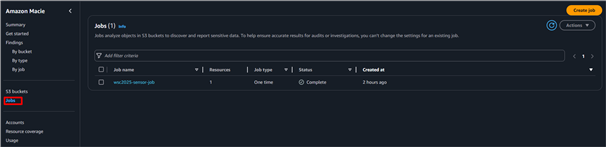

채점 유의사항
※ 다음 사항을 유의하여 채점하시오.
- 채점하는 서버가 선수의 서버가 맞는지 확인합니다.
- 채점시 명령어 입력은 아래 사진과 같이 CloudShell을 이용할 수 있습니다.

참고※ 채점기준 양식은 반드시, 양식에 맞추어 작성해야 합니다.(채점사이트 입력에 필요)
배점 요약
주요항목별 배점
| 번호 | 주요항목 | 배점 | 채점방법 | 채점시기 |
|---|---|---|---|---|
| 1 | CI/CD | 6 | 독립 | 경기 종료후 |
| 2 | Storage data protect | 6 | 독립 | 경기 종료후 |
| 3 | WAF | 6 | 독립 | 경기 종료후 |
| 4 | Secure networking | 6 | 독립 | 경기 종료후 |
| 5 | Serverless Inventory | 6 | 독립 | 경기 종료후 |
| 합계 | 30 |
세부항목별 배점
| 번호 | 항목 | 배점 |
|---|---|---|
| 1-1 | CI/CD · ECR Configure | 0.5 |
| 1-2 | CI/CD · ECR Image Tag | 0.5 |
| 1-3 | CI/CD · EKS Cluster Configure | 0.5 |
| 1-4 | CI/CD · EKS Node Configure | 0.5 |
| 1-5 | CI/CD · Pod Create | 0.5 |
| 1-6 | CI/CD · ELB Create | 0.5 |
| 1-7 | CI/CD · ELB Endpoint Check | 0.5 |
| 1-8 | CI/CD · Github Repository Configure | 0.5 |
| 1-9 | CI/CD · Github Action Cofigure | 0.5 |
| 1-10 | CI/CD · ArgoCD Deploy Test | 1.0 |
| 1-11 | CI/CD · ArgoCD SSOT | 0.5 |
| 2-1 | Storage data protect · S3 Create | 0.5 |
| 2-2 | Storage data protect · Macie Job Create | 0.5 |
| 2-3 | Storage data protect · Lambda Create | 0.5 |
| 2-4 | Storage data protect · Lambda Trigger | 1.0 |
| 2-5 | Storage data protect · File masking check | 1.5 |
| 2-6 | Storage data protect · Macie Sensor Test | 1.0 |
| 2-7 | Storage data protect · Masking Test | 1.0 |
| 3-1 | WAF · App Server Configure | 1.0 |
| 3-2 | WAF · ELB Configure | 1.0 |
| 3-3 | WAF · WAF Configure | 1.0 |
| 3-4 | WAF · login API Attach | 1.5 |
| 3-5 | WAF · lookup API Attach | 1.5 |
| 4-1 | Secure networking · VPC Create | 0.5 |
| 4-2 | Secure networking · Subnet Create | 0.5 |
| 4-3 | Secure networking · Bastion Create | 0.5 |
| 4-4 | Secure networking · Network Firewall Configure | 0.5 |
| 4-5 | Secure networking · Network Firewall Stateless rule | 1.0 |
| 4-6 | Secure networking · Network Firewall Stateful rule | 1.0 |
| 4-7 | Secure networking · Bastion Ping Test | 1.0 |
| 4-8 | Secure networking · Bastion DNS Query Test | 1.0 |
| 5-1 | Serverless Inventory · Resource Create | 0.5 |
| 5-2 | Serverless Inventory · No Computing Service | 1 |
| 5-3 | Serverless Inventory · Step Functions 1 | 1 |
| 5-4 | Serverless Inventory · Step Functions 2 | 1 |
| 5-5 | Serverless Inventory · API Gateway GET | 1.5 |
| 5-6 | Serverless Inventory · API Gateway GET Deny | 1 |
| 합계 | 30 |
채점 항목
1-0. 사전준비 (CI/CD)
- 웹브라우저로 선수의 AWS 계정에 로그인 후 ap-southeast-1 Region으로 접속합니다.
1-1. ECR Configure · 0.5점
채점 방법
-
웹브라우저로 선수의 AWS 계정에 로그인 후 CloudShell을 실행합니다.
-
아래 명령어를 입력 합니다.
$ aws ecr describe-repositories --repository-names app-repo --query 'repositories[0].repositoryName' --output text
기대 결과
- 출력되는 결과가 "app-repo" 인지 확인 합니다.
1-2. ECR Image Tag · 0.5점
채점 방법
-
웹브라우저로 선수의 AWS 계정에 로그인 후 CloudShell을 실행합니다.
-
아래 명령어를 입력 합니다.
$ aws ecr list-images --repository-name app-repo --query 'imageIds[?imageTag!=`null`].imageTag' --output text
기대 결과
- 출력되는 결과가 "vX.X.X" 인지 확인 합니다. (ex. v1.0.0)
1-3. EKS Cluster Configure · 0.5점
채점 방법
-
웹브라우저로 선수의 AWS 계정에 로그인 후 CloudShell을 실행합니다.
-
아래 명령어를 입력 합니다.
$ aws eks describe-cluster --name wsc2025-cluster --query 'cluster.[name, version]' --output text
기대 결과
- 출력되는 결과가 "wsc2025-cluster 1.32" 인지 확인 합니다.
1-4. EKS Node Configure · 0.5점
채점 방법
-
웹브라우저로 선수의 AWS 계정에 로그인 후 CloudShell을 실행합니다.
-
아래 명령어를 입력 합니다.
$ aws eks describe-nodegroup --cluster-name wsc2025-cluster --nodegroup-name wsc2025-app-ng \ --query 'nodegroup.[nodegroupName, instanceTypes]' --output text $ aws ec2 describe-instances \ --filters "Name=tag:eks:cluster-name,Values=wsc2025-cluster" \ --query 'Reservations[*].Instances[*].[InstanceId,InstanceType,Tags[?Key==`eks:wsc2025-app-ng`].Value | [0]]' \ --output text
기대 결과
- 출력되는 결과가 "wsc2025-app-ng", "t3.medium"인지 확인합니다.
1-5. Pod Create · 0.5점
채점 방법
-
웹브라우저로 선수의 AWS 계정에 로그인 후 CloudShell을 실행합니다.
-
아래 명령어를 입력 합니다.
$ kubectl get deploy -n wsc2025
기대 결과
- 출력되는 결과가 출력되고, READY 상태인지 확인합니다.
1-6. ELB Create · 0.5점
채점 방법
-
웹브라우저로 선수의 AWS 계정에 로그인 후 CloudShell을 실행합니다.
-
아래 명령어를 입력 합니다.
$ aws elbv2 describe-load-balancers \ --query "LoadBalancers[?LoadBalancerName=='wsc2025-cicd-alb'].LoadBalancerName" \ --output text
기대 결과
- 출력되는 결과가 "wsc2025-cicd-alb"인지 확인합니다.
1-7. ELB Endpoint Check · 0.5점
채점 방법
-
웹브라우저로 선수의 AWS 계정에 로그인 후 CloudShell을 실행합니다.
-
아래 명령어를 입력 합니다.
$ ENDPOINT=$(aws elbv2 describe-load-balancers \ --query "LoadBalancers[?LoadBalancerName=='wsc2025-cicd-alb'].DNSName" \ --output text) $ curl http://$ENDPOINT/
기대 결과
- 출력되는 결과에 “Version: v1”이 포함되어 있는지 확인합니다.
1-8. Github Repository Configure · 0.5점
채점 방법
-
선수의 Github에 접근하여 wsc2025-argocd-repo라는 Repository가 생성되어 있고, Public 형태인지 확인합니다.

wsc2025-argocd-repo Public 리포지토리 확인 화면 -
아래 그림처럼 최상위 폴더에 index.html과 version 파일이 존재하는지 확인하며, manifest 폴더가 존재하는지 확인합니다.

리포지토리 최상위 폴더 구성 (index.html, version, manifest)
1-9. Github Action Cofigure · 0.5점
채점 방법
-
Github Repository에 접근합니다.
-
Github Repository에 존재하는 version에 내용을 v1.0.1로 변경합니다.

version 파일을 v1.0.1로 변경하는 화면 -
index.html의 v1 부분을 전부 v2로 변경합니다.

index.html의 v1을 v2로 변경하는 화면
기대 결과
-
Github Action에서 workflow가 동작하는 것을 확인하고, 하나의 workflow만 존재하는지 확인

Github Action workflow 실행 화면
1-10. ArgoCD Deploy Test · 1.0점
채점 방법
-
1-9 항목 채점이 끝나고, 5분 뒤에 wsc2025-cicd-alb라는 이름을 가진 LoadBalancer에 접근하여, Version: v2로 변경되었는지 확인

LoadBalancer 접속 결과 Version: v2 화면
1-11. ArgoCD SSOT · 0.5점
채점 방법
-
웹브라우저로 선수의 AWS 계정에 로그인 후 CloudShell을 실행합니다.
-
아래 명령어를 입력합니다.
$ kubectl set image deployment/nginx-deploy nginx=nginx -n wsc2025 $ kubectl get deployment nginx-deploy -o jsonpath='{.spec.template.spec.containers[0].image}' -n wsc2025
기대 결과
- app-repo ECR에 존재하는 Image가 출력 되는지 확인합니다.
2-0. 사전준비 (Storage data protect)
- 웹브라우저로 선수의 AWS 계정에 로그인 후 ap-northeast-2 Region으로 접속합니다.
2-1. S3 Create · 0.5점
채점 방법
-
웹브라우저로 선수의 AWS 계정에 로그인 후 CloudShell을 실행합니다.
-
아래 명령어를 입력합니다.
$ aws s3api list-buckets --query "Buckets[?starts_with(Name, 'wsc2025-sensitive-')].Name" --output text
기대 결과
- wsc2025-sensitive-<임의의 4자리 영문>가 출력되는지 확인합니다.
2-2. Macie Job Create · 0.5점
채점 방법
-
웹브라우저로 선수의 AWS 계정에 로그인 후 CloudShell을 실행합니다.
-
아래 명령어를 입력합니다.
$ aws macie2 list-classification-jobs \ --query "items[?name=='wsc2025-sensor-job'].name" \ --output text
기대 결과
- wsc2025-sensor-job가 출력 되는지 확인합니다.
2-3. Lambda Create · 0.5점
채점 방법
-
웹브라우저로 선수의 AWS 계정에 로그인 후 CloudShell을 실행합니다.
-
아래 명령어를 입력합니다.
$ aws lambda list-functions \ --query "Functions[?FunctionName=='wsc2025-masking-start'].FunctionName" \ --output text
기대 결과
- wsc2025-masking-start가 출력 되는지 확인합니다
2-4. Lambda Trigger · 1.0점
채점 방법
-
웹브라우저로 선수의 AWS 계정에 로그인 후 S3에 접속합니다.
-
선수가 생성한 wsc2025-sensitive-<임의의 4개의 영문>를 접근합니다.
-
incoming prefix에 배포파일을 재업로드합니다.

incoming prefix에 배포파일 업로드 화면
기대 결과
-
최대 1분 정도 기다릴 수 있으며, masked prefix에 incoming prefix에 업로드한 파일들이 똑같이 생성되었는지 확인

masked prefix에 생성된 파일 확인 화면
2-5. File masking check · 1.5점
채점 방법
-
웹브라우저로 선수의 AWS 계정에 로그인 후 CloudShell을 실행합니다.
-
아래 명령어를 입력합니다.
$ aws s3 cp s3://wsc2025-sensitive-<임의의 4자리 영문>/masked/ ./masked/ --recursive $ cd masked/
기대 결과
-
아래 명령어를 입력하여 파일들이 마스킹이 되었는지 확인합니다.
$ for f in *; do echo "===== $f =====" head -n 5 "$f" echo done예)

마스킹된 파일 내용 출력 예시
2-6. Macie Sensor Test · 1.0점
채점 방법
-
웹브라우저로 선수의 AWS 계정에 로그인 후 AWS Macie Service에 접근합니다.

AWS Macie 콘솔 화면 -
wsc2025-sensor-job을 복사 후 scope의 additional settings의 모든 것을 제거한 후 다시 생성합니다. (job의 name은 선수 임의로 생성합니다.)

Job 복사 후 scope의 additional settings 제거 화면 
복사한 Job 생성 화면
기대 결과
-
Finding에서 아래와 같이 6개의 파일들이 전부 위험 상태로 존재하는지 확인

Findings에서 6개 파일이 위험 상태로 표시된 화면
2-7. Masking Test · 1.0점
채점 방법
-
웹브라우저로 선수의 AWS 계정에 로그인 후 AWS Macie Service에 접근합니다.

AWS Macie 콘솔 화면 -
wsc2025-sensor-job을 복사 후 변경사항 없이 Next 클릭하여 생성합니다. (job의 name은 선수 임의로 생성합니다.)

Job 복사 후 변경 없이 생성하는 화면
기대 결과
-
복사한 Job의 status가 Complete 상태인지 확인 후 Finding에서 감지되지 않았는지 확인합니다. (Findings의 개수가 늘어나지 않아야 합니다.)

복사한 Job의 Complete 상태 화면 
Findings 개수 확인 화면
3-0. 사전준비 (WAF)
- 웹브라우저로 선수의 AWS 계정에 로그인 후 us-east-1 Region으로 접속합니다.
3-1. App Server Configure · 1.0점
채점 방법
-
Default VPC에 배포된 Bastion의 shell에 접근합니다.
-
아래 명령어를 입력해 “wsc2025-app-server”이 출력 되는지 확인합니다.
$ aws ec2 describe-instances \ --filters "Name=tag:Name,Values=wsc2025-app-server" \ --query "Reservations[*].Instances[*].Tags[?Key=='Name'].Value[]" \ --output text -
아래 명령어를 입력해 403 Error 코드가 뜨지 않는지 확인합니다.
$ IP=$(aws ec2 describe-instances \ --filters "Name=tag:Name,Values=wsc2025-app-server" \ --query "Reservations[*].Instances[*].PublicIpAddress" \ --output text) $ curl "http://$IP:5000" $ curl "http://$IP:5000/login?name=admin'--&secret=anything" $ curl "http://$IP:5000/lookup?id=id%3D1+OR+1%3D1"
3-2. ELB Configure · 1.0점
채점 방법
-
Default VPC에 배포된 Bastion의 shell에 접근합니다.
-
아래 명령어를 입력해 wsc2025-waf-alb, application, internet-facing가 출력 되는지 확인합니다.
$ aws elbv2 describe-load-balancers \ --names wsc2025-waf-alb \ --query "LoadBalancers[*].[LoadBalancerName, Type, Scheme]" \ --output text
3-3. WAF Configure · 1.0점
채점 방법
-
Default VPC에 배포된 Bastion의 shell에 접근합니다.
-
아래 명령어를 입력해 wsc2025-waf가 출력되는지 확인합니다.
$ aws wafv2 list-web-acls \ --scope REGIONAL \ --query "WebACLs[?Name=='wsc2025-waf'].Name" \ --output text
3-4. login API Attach · 1.5점
채점 방법
-
Default VPC에 배포된 Bastion의 shell에 접근합니다.
-
아래 명령어를 입력했을 때 403 Error 코드가 출력 되는지 확인합니다.
$ export ALB_ENDPOINT=$(aws elbv2 describe-load-balancers \ --names wsc2025-waf-alb \ --query "LoadBalancers[*].DNSName" \ --output text) $ curl "http://$ALB_ENDPOINT/login?name=admin'--&secret=anything"
3-5. lookup API Attach · 1.5점
채점 방법
-
Default VPC에 배포된 Bastion의 shell에 접근합니다.
-
아래 명령어를 입력했을 때 403 Error 코드가 출력 되는지 확인합니다.
$ export ALB_ENDPOINT=$(aws elbv2 describe-load-balancers \ --names wsc2025-waf-alb \ --query "LoadBalancers[*].DNSName" \ --output text) $ curl "http://$ALB_ENDPOINT/lookup?id=id%3D1+OR+1%3D1"
4-0. 사전준비 (Secure networking)
- 웹브라우저로 선수의 AWS 계정에 로그인 후 eu-west-1 Region으로 접속합니다.
4-1. VPC Create · 0.5점
채점 방법
-
App VPC에 배포된 Bastion의 System Manager에 접근합니다.
-
아래 명령어를 입력해 172.16.0.0/16와 10.0.0.0/16가 출력 되는지 확인합니다.
$ aws ec2 describe-vpcs \ --filters "Name=tag:Name,Values=wsc2025-egress-vpc,wsc2025-app-vpc" \ --query "Vpcs[*].CidrBlock" \ --output text
4-2. Subnet Create · 0.5점
채점 방법
-
App VPC에 배포된 Bastion의 System Manager에 접근합니다.
-
아래 명령어를 입력해 순서 상관없이 10.0.4.0/24, 172.16.1.0/24, 172.16.0.0/24, 10.0.0.0/24, 10.0.1.0/24, 10.0.3.0/24, 10.0.2.0/24, 10.0.5.0/24가 출력 되는지 확인합니다.
$ aws ec2 describe-subnets \ --filters "Name=tag:Name,Values=wsc2025-egress-public-sn-a,wsc2025-egress-public-sn-b,wsc2025-egress-peering-sn-a,wsc2025-egress-peering-sn-b,wsc2025-egress-firewall-sn-a,wsc2025-egress-firewall-sn-b,wsc2025-app-private-sn-a,wsc2025-app-private-sn-b" \ --query "Subnets[*].CidrBlock" \ --output text
4-3. Bastion Create · 0.5점
채점 방법
-
App VPC에 배포된 Bastion의 System Manager에 접근합니다.
-
아래 명령어를 입력해 app-bastion이 출력 되는지 확인합니다.
$ aws ec2 describe-instances \ --filters "Name=tag:Name,Values=app-bastion" \ --query "Reservations[*].Instances[*].Tags[?Key=='Name'].Value|[0]" \ --output text
4-4. Network Firewall Configure · 0.5점
채점 방법
-
App VPC에 배포된 Bastion의 System Manager에 접근합니다.
-
아래 명령어를 입력해 “wsc2025-firewall”와 두 개의 subnet이 출력 되는지 확인합니다.
$ aws network-firewall describe-firewall \ --firewall-name wsc2025-firewall \ --query "[Firewall.FirewallName, Firewall.SubnetMappings[*].SubnetId]" \ --output text
4-5. Network Firewall Stateless rule · 1.0점
채점 방법
-
App VPC에 배포된 Bastion의 System Manager에 접근합니다.
-
아래 명령어를 입력했을 때 하나 이상의 출력값이 출력 되는지 확인합니다.
$ aws network-firewall list-rule-groups \ --type STATEFUL \ --query "RuleGroups[*].Arn" \ --output text $ aws network-firewall list-rule-groups \ --type STATELESS \ --query "RuleGroups[*].Arn" \ --output text
4-6. Network Firewall Stateful rule · 1.0점
채점 방법
-
App VPC에 배포된 Bastion의 System Manager에 접근합니다.
-
아래 명령어를 입력했을 때 하나 이상의 출력값이 출력 되는지 확인합니다.
$ aws network-firewall list-rule-groups \ --type STATEFUL \ --query "RuleGroups[*].Arn" \ --output text $ aws network-firewall list-rule-groups \ --type STATELESS \ --query "RuleGroups[*].Arn" \ --output text
4-7. Bastion Ping Test · 1.0점
채점 방법
-
App VPC에 배포된 Bastion의 System Manager에 접근합니다.
-
아래 명령어를 입력했을 때 Ping이 정상적으로 가지 않은지 확인합니다.
$ ping 1.1.1.1
4-8. Bastion DNS Query Test · 1.0점
채점 방법
-
App VPC에 배포된 Bastion의 System Manager에 접근합니다.
-
아래 명령어를 입력해 ;; communications error to 8.8.8.8#53: timed out가 출력되는지 확인합니다.
$ nslookup google.com 8.8.8.8
5-0. 사전준비 (Serverless Inventory)
- 웹브라우저로 선수의 AWS 계정에 로그인 후 us-west-1 Region으로 접속합니다.
5-1. Resource Create · 0.5점
채점 방법
-
웹브라우저로 선수의 AWS 계정에 로그인 후 CloudShell을 실행합니다.
-
아래 명령어를 입력하여 inventory, inventory-state-machine, inventory-rest-api가 차례대로 출력되는지 확인합니다.
aws dynamodb list-tables --query TableNames --output text aws stepfunctions list-state-machines --query stateMachines[].name --output text aws apigateway get-rest-apis --query items[].name --output text
5-2. No Computing Service · 1점
채점 방법
-
웹브라우저로 선수의 AWS 계정에 로그인 후 CloudShell을 실행합니다.
-
아래 명령어를 입력하여 []가 출력되는지 확인합니다.
aws lambda list-functions --query Functions
5-3. Step Functions 1 · 1점
채점 방법
-
웹브라우저로 선수의 AWS 계정에 로그인 후 CloudShell을 실행합니다.
-
아래 명령어를 입력하여 1200, 30이 출력되는지 확인합니다.
ACCOUNT_ID=$(aws sts get-caller-identity --query Account --output text) aws dynamodb put-item --table-name inventory --item '{"name": {"S": "balance"}, "value": {"N": "1000"}}' aws dynamodb put-item --table-name inventory --item '{"name": {"S": "stock"}, "value": {"N": "50"}}' aws stepfunctions start-execution --state-machine-arn arn:aws:states:us-west-1:$ACCOUNT_ID:stateMachine:inventory-state-machine --input '{"sales": 20}' sleep 5 aws dynamodb get-item --table-name inventory --key '{"name": {"S": "balance"}}' --query Item.value.N --output text aws dynamodb get-item --table-name inventory --key '{"name": {"S": "stock"}}' --query Item.value.N --output text
5-4. Step Functions 2 · 1점
채점 방법
-
웹브라우저로 선수의 AWS 계정에 로그인 후 CloudShell을 실행합니다.
-
아래 명령어를 입력하여 1200, 100이 출력되는지 확인합니다.
ACCOUNT_ID=$(aws sts get-caller-identity --query Account --output text) aws dynamodb put-item --table-name inventory --item '{"name": {"S": "balance"}, "value": {"N": "1200"}}' aws dynamodb put-item --table-name inventory --item '{"name": {"S": "stock"}, "value": {"N": "30"}}' aws stepfunctions start-execution --state-machine-arn arn:aws:states:us-west-1:$ACCOUNT_ID:stateMachine:inventory-state-machine --input '{"sales": 30}' sleep 5 aws dynamodb get-item --table-name inventory --key '{"name": {"S": "balance"}}' --query Item.value.N --output text aws dynamodb get-item --table-name inventory --key '{"name": {"S": "stock"}}' --query Item.value.N --output text
5-5. API Gateway GET · 1.5점
채점 방법
-
웹브라우저로 선수의 AWS 계정에 로그인 후 CloudShell을 실행합니다.
-
아래 명령어를 입력하여 DynamoDB의 값을 재설정 합니다.
aws dynamodb put-item --table-name inventory --item '{"name": {"S": "balance"}, "value": {"N": "1200"}}' aws dynamodb put-item --table-name inventory --item '{"name": {"S": "stock"}, "value": {"N": "100"}}' -
API Gateway 콘솔에 접속하여 inventory-rest-api의 도메인 주소를 기록합니다.
기대 결과
- https://<선수 도메인>/v1/inventory?item=balance에 접속하여 1200 (큰 따옴표 없음)이 출력되는지 확인합니다.
- https://<선수 도메인>/v1/inventory?item=stock에 접속하여 100 (큰 따옴표 없음)이 출력되는지 확인합니다.
5-6. API Gateway GET Deny · 1점
채점 방법
- API Gateway 콘솔에 접속하여 inventory-rest-api의 도메인 주소를 기록합니다.
기대 결과
- https://<선수 도메인>/v1/inventory?item=mysecrets에 접속하여 403 Forbidden이 출력되는지 확인합니다. 코드와 바디 모두 403에 해당 하는지 확인합니다.